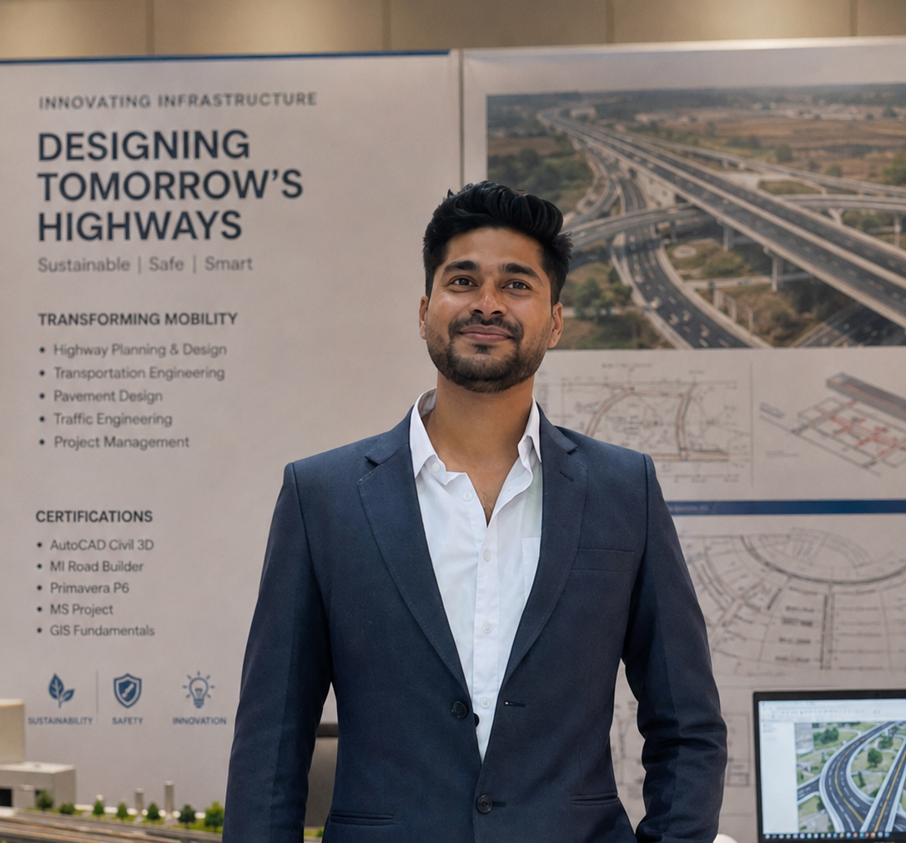
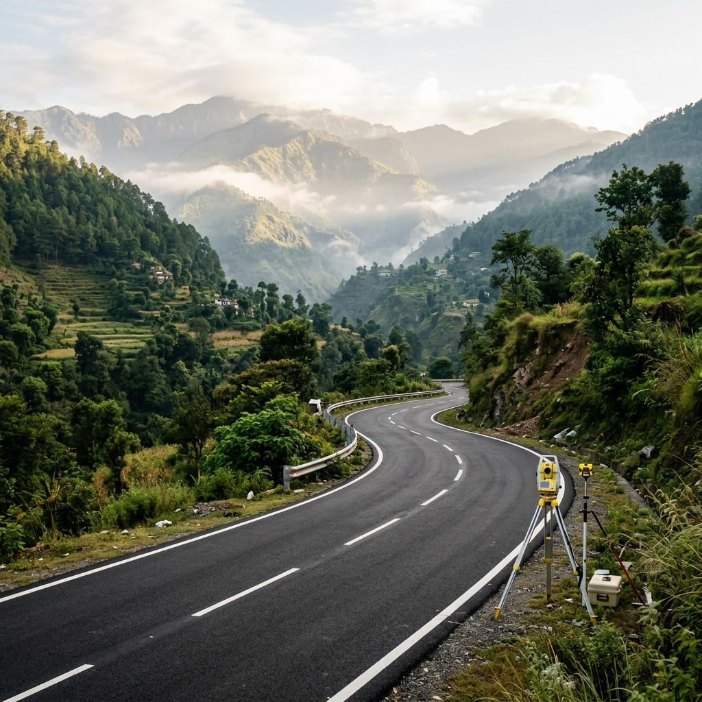
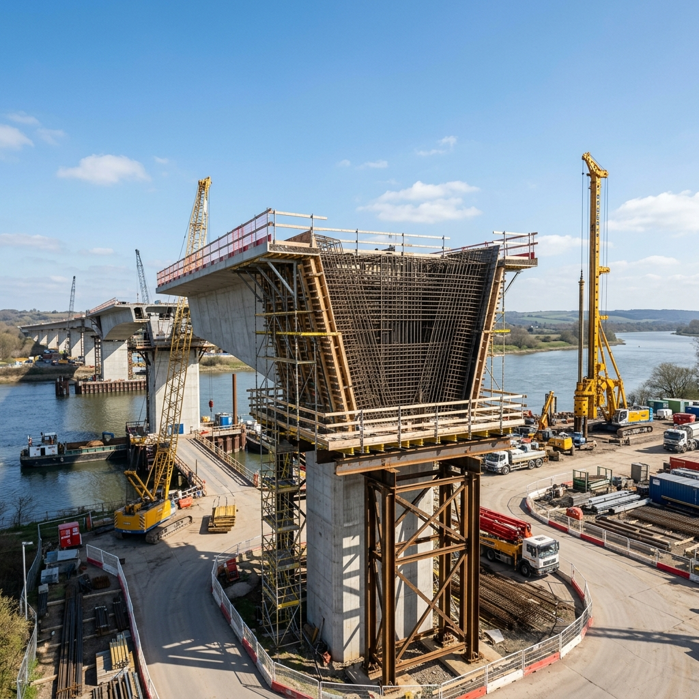
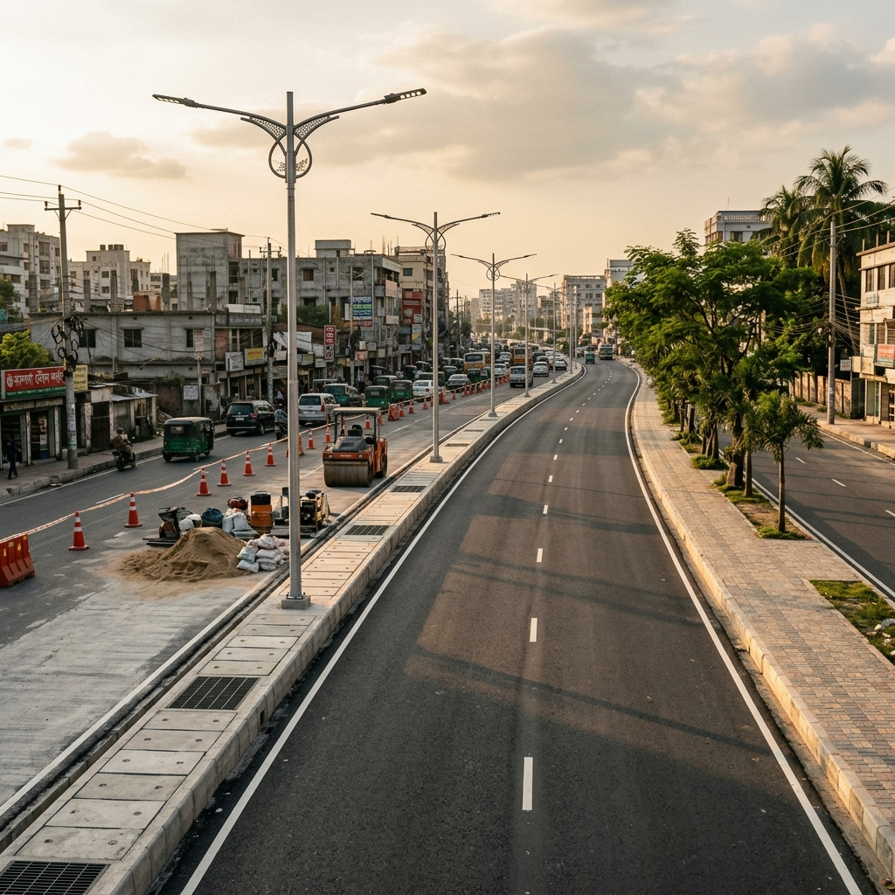

Civil & Highway Engineer
7 Years of Highway Design, Site Supervision & Engineering Automation Across Nepal's Largest Infrastructure Programmes

I'm a civil and highway engineer with 7 years of end-to-end project delivery across Nepal's most significant road infrastructure programmes — including Nepal's first expressway, the Kathmandu–Terai/Madhesh Fast Track Expressway (NH-33). Currently delivering a 7.2 km stretch (CP-9A & CP-9B) valued at approx. USD 95M / NPR 13B.
My career spans the full spectrum: from Civil 3D alignment design and drainage modelling to hands-on site supervision of bridge foundations, retaining structures, and large-scale earthworks. I've supervised 6 bridge structures with piling, managed 3 concurrent subcontractor teams, delivered ADB-funded multi-district programmes, and maintained formal QA/QC reporting — achieving zero structural rework on 2,000+ m³ of completed concrete.
What sets me apart is my drive to merge civil engineering with technology. I've built Python + PyAutoCAD automation suites that cut routine engineering workflows by ~50%, pioneering digital delivery in an industry still transitioning to modern tools.
Nepal's first expressway — 7.2 km stretch (CP-9A & CP-9B) · USD 95M / NPR 13B
Python + PyAutoCAD scripts saving ~50% workflow time
2,000+ m³ structural concrete supervised with zero defects
52 road & bridge schemes across 16 districts (ADB-funded)
From highway design to expressway construction — a progressive engineering career
Baniya Nirman Sewa Pvt. Ltd. (Yooshin JV — Supervision Consultant)
Kathmandu–Terai/Madhesh Fast Track Expressway (NH-33) — Nepal's First Expressway
Civil Informatics and Solutions Pvt. Ltd.
Rural Connectivity Improvement Programme (ADB-funded, ~USD 1.1M / NPR 150M) — 16 Districts
Universal Research and Development Pvt. Ltd.
Rural Road Infrastructure & Asset Management
Naya Rastriya Engineering Consultancy
Integrated Urban Development Plan — 48 Municipalities
Landmark infrastructure projects that define Nepal's road connectivity future
Nepal Army / Yooshin JV · NH-33
Nepal's first expressway (NH-33) connecting the capital to the southern plains. Responsible for design, drawing production, bridge piling supervision, and engineering automation across Contract Packages CP-9A & CP-9B (7.2 km stretch of the 71 km total project).

ADB / Government of Nepal
ADB-funded programme improving road connectivity across 16 districts. Delivered highway design, field verification, and cost estimation for 52 road and bridge schemes in challenging Himalayan terrain, with Python automation cutting design/BOQ time by ~50%.

Local Government
Led design and technical studies for a 21 km rural road project from feasibility to construction documentation. Conducted annual condition surveys across 8 road sections supporting asset management decisions.

Municipalities — Dharan, Janakpur, Nepalgunj, Siddharthanagar
Improved urban service delivery across 48 municipalities covering water supply, sanitation, solid waste, and urban roads. Supported design, cost estimation, and procurement for urban road projects.
Building bespoke tools that eliminate manual effort and protect project data — engineering meets software
Designed and developed an AI-powered project correspondence system that runs entirely on a local machine with no cloud data transfer — keeping confidential contract communications fully private and on-premise. Indexes and retrieves formal letters across Contract Packages CP-9A and CP-9B, improving traceability of contractual correspondence and accelerating information flow across the project team.
Built a reusable automation toolkit for DWG data extraction, quantity take-off generation, and standardised Excel reporting (pandas, numpy) — cutting routine engineering workflows by ~50% and eliminating transcription errors on BOQ submissions across multiple projects.
A unique blend of engineering domain knowledge and digital automation capability
Academic foundation and professional development
Civil Engineering — IOE Thapathali Campus, Tribhuvan University
Kathmandu, Nepal · Graduated 2019
Eligible to apply for Engineers Australia CPEng pathway. Core studies in structural analysis, transportation engineering, hydraulics, and geotechnical engineering.
Autodesk / LinkedIn Learning
Professional CPD
LinkedIn Learning
CSI
Registration No. 24542 · Civil 'A'
English Professional Proficiency · Degree recognised for international skills assessment
Engineering expertise available for projects, consulting, and collaboration
Complete road design in Civil 3D — alignments, profiles, cross-sections, superelevation, and grading plans to international standards.
Feasibility studies, detailed project reports, field surveys, and construction documentation from concept to bid-ready packages.
Accurate quantity takeoffs, Bills of Quantities, rate analysis, and cost estimates aligned to project specifications and tender requirements.
On-site supervision of earthworks, concrete operations, bridge foundations, and quality compliance with zero-rework methodology.
Custom Python + PyAutoCAD solutions for CAD data extraction, automated BOQ generation, and report compilation — saving 50%+ time.
Progress reports, QA/QC records, measurement documentation, and contract administration support for donor-funded and government projects.
I'm actively seeking highway engineering roles across the APAC (Asia-Pacific) and EMEA (Europe, Middle East & Africa) regions. Whether you're a recruiter, potential employer, or fellow engineer — I'd love to hear from you.
erbhaskarm@gmail.com
+977-9849666190
linkedin.com/in/bhaskar-mishra
Kathmandu, Nepal · Open to relocation